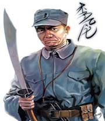

百家讲坛全集
>
百家讲坛2006
>
百家讲坛 另类英雄李云龙

名称：
集数：
播出时间：
百家讲坛 另类英雄李云龙
3
2006年03月27日
俗话说，军人以服从命令为天职。可是，电视剧《亮剑》中的主人公李云龙却经常抗命，把上级的指示当成耳旁风。但令人感到奇怪的是，就是这样一个人，领导依然器重他，友军特别佩服他，敌人格外重视他。更令人感到纳闷的是，李云龙的缺点表现得异常明显，他没有什么文化，非常粗鲁，一开口就脏话连篇，甚至，还多多少少带有一点匪气，为什么他会得到观众超乎寻常的喜爱呢？李云龙这一英雄形象与传统的英雄人物究竟有着怎样的不同呢？
分集介绍
《百家讲坛》 另类英雄李云龙 （上）
播出时间：
主讲人：
介绍：
2006年03月27日
徐放鸣
俗话说，军人以服从命令为天职。可是，电视剧《亮剑》中的主人公李云龙却经常抗命，把上级的指示当成耳旁风。但令人感到奇怪的是，就是这样一个人，领导依然器重他，友军特别佩服他，敌人格外重视他。
《百家讲坛》 另类英雄李云龙 （中）
播出时间：
主讲人：
介绍：
2006年03月28日
徐放鸣
李云龙是一个很有个性的英雄人物，他与我们以往所熟知的那些英雄，比如《沙家浜》里的郭剑光，《智取威虎山》里的少剑波、杨子荣，《英雄儿女》里的王成等人不太一样，甚至可以说，很不一样。那么，他们之间究竟有什么不同呢？看来，要想弄清楚这个问题，首先得分析一下，李云龙他到底有着怎样的性格特点。
《百家讲坛》 另类英雄李云龙 （下）
播出时间：
主讲人：
介绍：
2006年03月29日
徐放鸣
李云龙有很多过人之处，勇敢果决、多谋善断、捕捉战机的意识和经验异常丰富。他“作为一名军人，明知不敌，也要宝剑出鞘”。但他不是一个守纪律的军人，他纪律性特差。那么，李云龙这一英雄形象，与以往的军人英雄形象究竟有什么不同呢？在人物的形象塑造上到底有哪些突破呢？